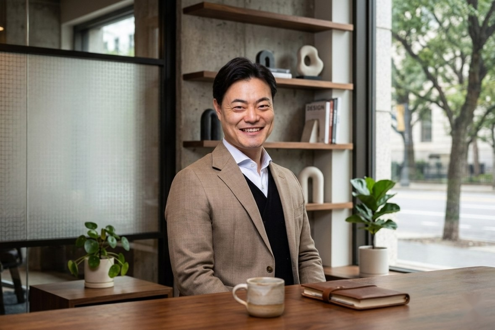
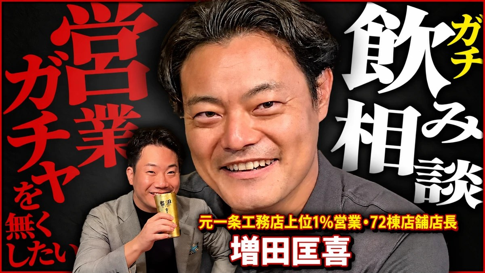
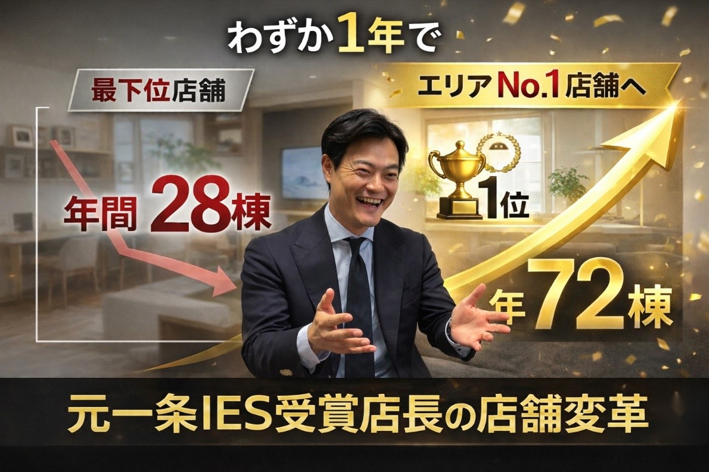

研修を受けたくても受けられない営業に、増田メソッドを届ける増田メソッド
個人コンサルティング
会社が研修を導入していなくても、個人で申し込めます。元一条工務店トップ営業の増田匡喜が、あなたの案件を題材に、月1回の面談と日々の壁打ちで「お客様の間違いを正せる営業」へ導きます。

“営業ガチャ”をなくしていく
お客様が人生で一番高い買い物をするのに、どの担当者に当たるかで結果が変わる。この状態を、営業一人ひとりの力でなくしていきます。
- 営業ガチャを減らすどの担当者に当たっても、お客様が正しく導かれる家づくりにしたい。
- 強い営業を輩出し、企業を強くする一人が成果を出せば、周りが理由を知りたくなる。変化は一人から会社へ広がる。
- 縮む市場で淘汰されない営業になる名簿が減っても決めきれる力が、これからの自分を守る。
- どこでも求められる営業になっておく人の移動が起きる時代。会社を移る時も、安心して選べる実力を今のうちに。
増田の想いは、こちらの動画でご覧ください
営業はセンスではない。入社9か月間契約ゼロから上位1%になった増田が、営業ガチャのない世界と、そのための手法を語っています。

今、届く人が限られている
企業様向けのコンサルティングでは、会社単位の顧問支援と研修で、全国の住宅会社に増田メソッドを届けてきました。それでも、届かない営業がいます。
受けられない
会社が導入していなければ、学びたくても手段がない。複数店舗の会社では、対象外の店舗の営業にも届かない。
接点がない
YouTubeとInstagramでの発信だけでは、一方通行で伝わりきらない。自分の案件に当てはめるところまで行けない。
自分で選んだ人ほど、成果が出る
ヒアリングは当たり前だが、難しい。やり切るには本気度が最も重要。会社に言われて受ける研修より、自分で選んだ学びの方が身につく。
名簿が減る時代に持つべき力
営業の結果は、名簿の数と契約率の掛け算で決まります。名簿はこれから必ず減ります。自分の力で伸ばせるのは契約率だけです。
出所：国土交通省「建築着工統計調査報告」（2025年度）、PG戸籍名簿 住宅着工戸数見通し（2026年9月）、PG試算（2026年10月）
商品で差がつかなくなった
断熱等級5以上が当たり前になり、お客様には性能の差が分かりにくい。営業トークにも差が出にくい。差別化の軸は商品ではなく「人」。
お客様は下調べをして来る
SNS・YouTubeで事前に情報収集し、「絶対に失敗したくない」心理で来場する。ただし下調べの知識には誤りも多い。間違いを正せる営業が選ばれる。
接客水準が単価に見合っていない
中古車とレクサスなら、接客が良いのはレクサス。家は人生で一番高い買い物なのに、十分なヒアリングがないまま見積もりやプランが出されている。
こんな方のためのコンサルです
- 本気で「顧客第一」を体現したいヒアリングは当たり前だが、難しい。それでもやり切りたい方。
- 結果は出ているが、契約率をもう一段上げたい名簿が減る中で、一件ごとの決定力をさらに高めたい。
- 売れている理由を、自分の言葉で説明できない感覚ではなく型にして、いつでも再現できるようにしたい。
- ヒアリングが「リサーチ」になっていると感じる聞いた項目を埋めるだけで、理由まで深掘りできていない。
- 社内では相談しにくいことがある一人で抱えたまま、次の商談を迎えている。
- 売れずに辞めることを考え始めている入社9か月間契約ゼロだった増田だから言える。やり方を知り、やり切れば売れるようになる。
支援先での成果
住宅会社の営業部長代行として6か月支援した結果です。一部の人だけでなく、支援した営業全員の数字が上がりました。
接客→契約率。バーの長さは50%を上限とした比率。
営業はセンスではない。やり方を知り、やり切れば売れる。
一度増田と
直接話してみませんか？
今の状況と悩みをじっくりお聞きします。受けるかどうかは、面談の後に持ち帰って決めていただけます。
無料相談 受付中増田に無料で相談する増田メソッドとは
増田メソッドは、お客様の側に立ち、家族のように本当のことを伝える営業手法です。出発点はテクニックではなく、お客様に対する立ち位置です。
お客様は家づくりの素人、営業は家づくりのプロ。 プロとしてお客様の間違いを正せる営業が、選ばれ続ける。
御用聞きでは、お客様の間違った順番のまま家づくりが進み、後悔が残ります。増田メソッドは、営業が「先生ポジション」に立ち、正しい順番と適正な予算をお客様が自分で納得して選べるように導きます。ゴールは契約ではなく、目の前のお客様の幸せ。契約も紹介も、その結果としてついてきます。
- 迷わず、間違えずに家づくりを進められる
- 納得した上で判断できるため、後悔や不安が残らない
- 売り込まずに、信頼で選ばれる
- 会社や商品が変わっても通用する力が身につく
- 解約・クレームが減り、紹介が生まれる
- 営業が育ち、人が集まり、辞めない組織になる
根本思想目指す状態は「この人に任せれば大丈夫」とお客様に言われること
家族が間違えそうなら必ず正す。必要なら、喧嘩してでも正す覚悟で向き合う。
お客様を幸せにすることが、自分自身を幸せに導く。
正したかどうかではなく、お客様が納得し、不安がなくなったかで判断する。
任せてもらえないのは、気づかせ、正せなかった自分の力不足。常に振り返る。
正しい家づくりの順番を、お客様に示す
家づくりの失敗の多くは、進める順番の誤りから生まれます。土地がなければ家は建たない。それでも土地から探すと、建物と予算にしわ寄せが来ます。
| お客様によくある誤り | 起きること | 増田メソッドの正し方 |
|---|---|---|
| 土地から探す | 土地に予算を使い、建物を削ることになる | 建物と総額を先に固める |
| プランを先に求める | 見た目の比較になり、優先順位が決まらない | 理想と優先順位を言葉にしてから図面にする |
| 予算を先に伝える | 予算に合わせた安い提案しか出てこない | 暮らしと将来の家計から適正な予算を導く |
| 100点の土地を求める | 探し続ける間に、地価と金利が上がる | 優先順位を決め、割安には理由があると伝える |
| 予算が低すぎる | 性能が届かず、住んでからの負担が増える | 光熱費まで含めた総額で判断してもらう |
上3つは「順番」の誤り、下2つは「物差し」の誤り（土地への期待は高すぎ、予算は低すぎる）。
一般的な流れ2〜3か月
- 来場後すぐに予算を聞き、土地と資金計画を提案
- プラン提案を何度も繰り返す
- 値引きでクロージングし、契約後に金額が上がる
- お客様は比較に疲れ、判断の軸を失う
早期契約の流れ1〜1.5か月
- 初回でヒアリング、全体像の説明、資金計画、日程案内
- 体感とオーナー宅訪問で、住みたいかを確かめる
- 依頼先を決めてから、土地を案内して決める
- お客様は不安なく、正解を理解して進む
増田メソッドで身につけること
お客様の背景と知識レベルを把握し、間違いを正し、自分で納得して選べるように支える。この4ステップを、あなたの商談の場面で練習します。
背景と状況を把握する
なぜ家を建てたいのか。なぜ今か。今どんな状況にいるのか。
知識レベルを知る
お客様が何を知っていて、どこで仕入れた知識か。
間違いを正す
間違ったインプットを、正しい知識に置き換える。
正しく選べるよう支える
お客様が自分で納得して選べるように導く。
増田メソッドの8つの技術すべて「なぜそうするのか」とセットで使う
- 1不安の正体を言葉にする「高い」の奥にある不安を言語化し、解決できる形にする。
- 2暮らしの数字を根拠にする今の部屋の広さや光熱費など、お客様自身の数字で示す。
- 3二択で優先順位を決める「どちらを優先しますか」で理想と予算のずれを整える。
- 4比喩と体感で腹落ちさせる魔法瓶の例えや、実際の空間での答え合わせ。
- 5他社は下げずに切り分ける気に入っている強みは認め、判断の根拠を見直してもらう。
- 6質問でお客様に言わせる答えを教えず、お客様自身の口から結論を出してもらう。
- 7責任を持ち、未来を修正する進め方の誤りは営業側の責任と認め、ここからの修正を示す。
- 8大事なことは何度でも伝える伏線を張って回収し、間違えてほしくないことは繰り返す。
実際の活用方法を、動画で
増田メソッドを現場でどう使うか。土地決めと紹介受注を題材にした2本です。クリックするとYouTubeで開きます。
私も元々は「売れない営業」でした。
増田メソッドは、入社9か月間契約ゼロだった増田自身が、売れる仕組みをやり切る中で組み立てた型です。才能ではなく、やり方を知り、やり切ったかどうか。
- 2018年9月一条工務店に入社（30歳・異業種から未経験）
入社後9か月間、契約ゼロ。「センスなし」と言われた。
才能がないなら、やり切るしかない。 - 2019年一条の勝ちフローを徹底して初受注。年4棟
週3回のロープレ。「知らない事を知る」ことから、売れる仕組みを自分で組み立て始める。
- 2020〜2022年年10棟 → 10棟 → 11棟
体感施設を使ったルーティンと「週1回の一人ロープレ」を固定。一条フローの徹底に「人売り」を足し、型が固まる。
- 2023年年13棟。25組商談で勝率52%。IES（優秀営業社員）に選出
3,300人中40名（約1%）。2年連続受賞、2年で31棟。一条では珍しく「土地あり」のお客様が得意だった。
苦手な土俵ではなく、得意な土俵に持ち込む。 - 2024年（店長1年目）大阪最下位の展示場を、同じメンバーで年28棟 → 72棟に
大阪No.1展示場、花博住宅博でもNo.1。個人でも18棟・勝率51%。原理原則「成績の良い展示場は店長の成績が良い」を自ら示した。
- 2025年9月累計74契約・キャンセル0件で一条工務店を卒業
店長より上のポジションは見えなかった。売れない営業を売れる営業に変えたい。だから、育てる側へ回ることにした。
- 2025年10月〜ピュアグロース株式会社 マネージャー
全国150社以上のビルダーを支援。標準営業フローの構築と定着、ロープレ、案件進捗会議、店長育成。

No.1展示場へ、部下と取り組んだ3つのこと
- 自信構築 1on1で働く目的を明確にし、初回接客を改善。案件進捗は相談で自発自走に
- 土地付け戦略 土地案内1発買付の「トーナメント方式」。親御様を味方に
- 濃厚名簿の増加 紹介訴求資料で「紹介意識づけ」。ゴールデンタイムのテレアポは文言統一
料金
- 月1回の面談（1〜2時間、オンライン）。対面は不定期
- 案件指導・インプット・ロープレ・ヒアリング・数字管理・壁打ち
- 特典：増田メソッドハンドブック
- 最低6か月からのご契約・お支払いは銀行振込
無料ではなく、自分で払う。
だから本気で学べる。
増田メソッドは、意欲が高い人ほど成果が出る型です。自分で選び、自分で払うからこそ、本気でやり切れます。
価格を抑えたのは、より多くの営業に届けるためです。
安心して受けていただくために
勤務先には一切開示しません
ご相談内容やお名前を、お勤め先に伝えることはありません。所属する会社が増田の支援先であっても同じです。
個人でお申し込みいただけます
会社の決裁は不要です。あなた自身の判断で始められます。
見据えていること
学んだ住宅営業の成果を生み出す
増田メソッドを学んだ方の成果を、一つずつ生み出していく。
増田メソッドの認知を上げる
成果が評判となり、業界に広がっていく。
認定制度で、住宅営業の価値を上げる
増田メソッド認定制度をつくり、学んだことを営業としての価値にする。
お申し込み
下のフォームからお申し込みください。折り返し面談の日程をご案内します。受けるかどうかは、面談の後に持ち帰って決めていただけます。
フォームを送る
お名前・ご連絡先・知ったきっかけをご記入ください。
面談
今の状況と悩みを、じっくりお聞きします。
内容のご説明
受けるかどうかは、持ち帰って決めていただけます。
スタート
初回の面談から始めます。
お申し込みを受け付けました
ありがとうございます。ご記入いただいたメールアドレスまたは電話番号へ、面談の日程をご連絡します。
導ける営業になる為、
導いてくれる営業を見極める為。
営業が変われば、その先のお客様の家づくりが変わる。
お客様は、迷わず、間違えずに家を建てる。営業は、信頼で選ばれる力を身につける。